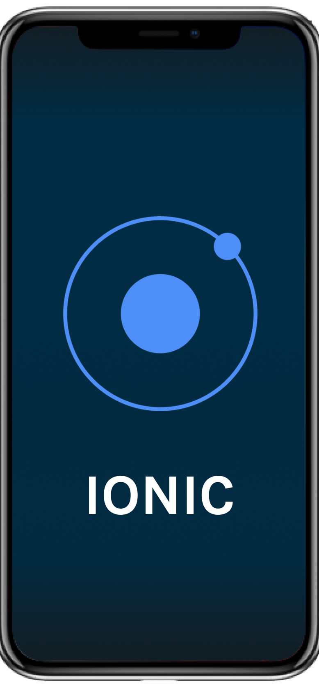
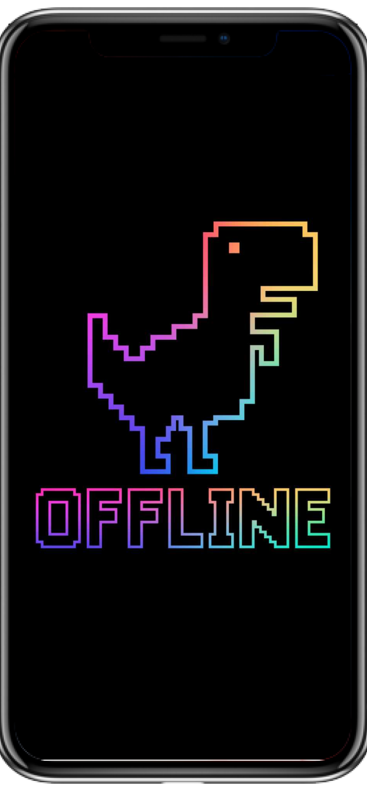

Task Manager
This app was developed using the Ionic framework taking advantage of the today’s web capabilities to build powerful and reusable layouts.

IONIC

With this app you can create your own account to access and create tasks for you to keep your life more organized.
We have also an offline feature to view your tasks locally as read only until you recover connection.
